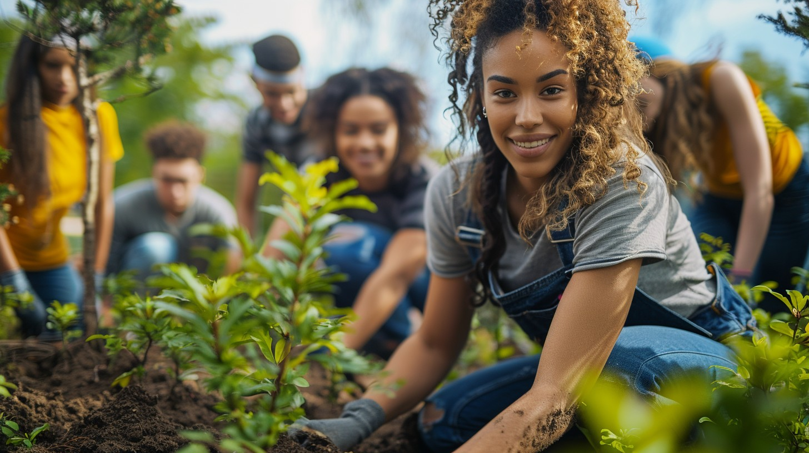

Volunteer
Join Our Willow Gardens Volunteer Team!
Volunteering at Willow Gardens is more than just lending a helping hand—it's about growing together as a community. As a volunteer, you'll play a vital role in maintaining our beautiful garden, supporting local families, and fostering a love for nature.
Why volunteer with us?
- Make a difference: Your efforts help create a thriving space for everyone to enjoy, from seasoned gardeners to curious newcomers.
- Learn and Grow: Gain hands-on experience in gardening, sustainable practices, and community building.
- Meet Amazing People: Connect with neighbors, share stories, and build friendships in a welcoming and inclusive environment.
- Support Local Families: Help provide opportunities for families to grow their own food, learn new skills, and enjoy the outdoors.
Ways you can get involved:
- Teaching gardening tips to beginners.
- Assisting with garden maintenance and upkeep.
- Helping organize events and workshops.
- Supporting community composting and sustainability initiatives.